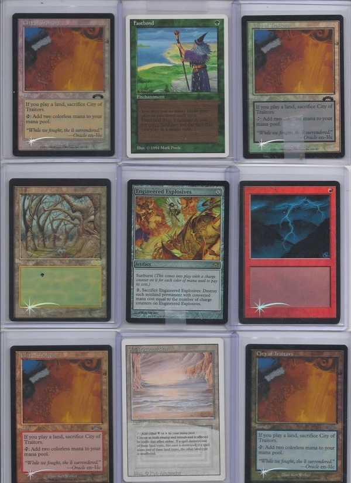

作者：多明尼亚世界 Barrin
原文地址：http://www.mtgchina.net/bbs/forum.php?mod=viewthread&tid=246313#lastpost
作为风靡全世界的集换式卡牌游戏，万智牌的收藏价值并不亚于其竞技价值。笔者就用这个帖子说说那些让全世界万智牌收藏家追逐的珍稀卡牌。
PS：本帖为半原创，如有遗漏或错误，望大家补充指正。
10. 狱窖闪天使
没错，就是半个月前AVACYN售前现开的狱窖。根据WOTC官方宣布，该现开全球共发行六千个狱窖，其中，有三十家WPN牌店随机得到了特殊的PREMIUM狱窖。狱窖中有5种共54张大尺寸闪天使恶魔卡以及108张天使恶魔衍生物。此外，PREMIUM狱窖中还有随机的一种与恶魔天使有关的PROMO闪牌。三十个狱窖中共12种闪牌。在北京开出的闪狱窖给的是JUDGE闪恶魔导师，目前已知的闪有恶魔导师，DECREE OF JUSTICE, 大画闪撒拉复仇者，昂扬天使等等。虽然这些PROMO闪牌价值不菲，但是它们都是以前官方发行过的闪，其价值完全无法与几年前ZENDIKAR现开时补充包里的”宝藏“相比。因此，闪狱窖里真正的亮点是那54张大天使和108张天使衍生物。全球共发行每种闪大卡30*54/5=324张， 闪衍生物3240张。 也就是说，全球最多有324个人可以拥有这全套的闪狱窖纪念卡牌。 想想全球的万智牌收藏家人数，再想想天使在万智牌牌手心中的地位，我们就不难理解为什么刚一上市这些大卡就全部突破100美元大关了。上次万智牌官方发行的产品刚上市就突破100美元是什么时候？真的不记得了，或者就根本没有过。所以，笔者认为，除非WOTC再次发行这些卡片，否则他们会在不久的将来缔造又一次收藏界的奇迹。
9. 大画冠军闪异形地窖
06到08年间，WOTC举办了一种叫CHAMP/STATE的比赛。相信当时打牌的老牌手们都还记得这一赛事。为了鼓励牌手参赛，WOTC对参赛牌手提供了PROMO奖励。所有参赛者都将获得一张大画异画非闪牌，而比赛名列前茅的选手将获得特殊的大画闪牌。在这项赛事短短的2年半历史中，WOTC共发行了6种大画冠军闪：炎灵尼米杰，虚空黏泞， 撒拉复仇者，撼地灵，攻城塔杜蓝和异形地窖。由于数量并不多，这些大画闪受到广大牌手的欢迎，作为其中最不值钱的一张，虚空黏泞也已经上涨到人民币300以上。而在这六张牌中，大画闪异形地窖机缘巧合的成为了收藏家的新宠。
时间退回到2008年三月。举办了2年多的CHAMP/STATE比赛由于参赛选手逐渐减少，已经成为了可有可无的鸡肋。2008年三月的冠军赛更是出现了罕见的低报名率。费尽心机激励牌手的WOTC一气之下取消了全世界大部分地区的比赛。于是，英国和亚洲部分地区成为了少有的举办此次比赛的地方。正因为如此，只有很少的牌手得到了该次比赛前4名的奖励：大画闪异形地窖。由于存世量极少，大画地窖的价值一直居高不下。虽然在洛温退出T2之后地窖经历了短暂的下跌，但是随着其在人鱼的广泛应用，异形地窖重新成为了昂贵的代名词。如今，一张大画地窖的价格已经超过了UNLIMITED的马可们，直逼黑莲花。
没人知道究竟有多少大画地窖存世。不过据笔者统计，当时英国共有36个地点举办了CHAMP比赛，一共是4*36=144张异形地窖。亚洲的数量不得而知，据说主要是在日本。这些加上多发给举办者的promo，估计异形地窖的存世量应该在500张左右。这也是为什么在短短的5年间，大画地窖的价值翻了10翻。
8. ALPHA黑莲花
作为万智牌的第一个系列，ALPHA于1993年8月5日问世。WOTC只印了二百六十万张ALPHA牌，目的是测试这个新兴游戏的受欢迎程度。没有想到，这个游戏取得了空前的成功，二百六十万张牌在短短的几个月便被卖光。与其它游戏的第一版本一样，ALPHA的牌完全没有考虑到平衡，过于强大。也正因为如此，黑莲花这张万智牌史上最强大的牌永久的成为了传奇。 由于ALPHA黑莲花只有1100张，而其久远的年代又造成了大多数黑莲花的品相惨不忍睹。因此，高分评级的黑莲花几乎霸占了万智牌成交记录前列的大半位置。作为世界上评分最高，也是唯一一张BGS10的黑莲花，下图这张牌2008年市场估价便达到了惊人的5万美元。2005年，当美国大牌商Darren Adams得到它的时候就支付了20000美金。即便是NB程度稍差的仅存的几张PSA10分的黑莲花，也估价在三万美元以上。唯一的数据是远在2005年EBAY上以6000美金成交的一张。
随着时光的流逝和万智牌受到越来越多玩家的喜爱，黑莲花的传说仍会继续下去。
7. 天命克撒无字闪
如果说之前的三种稀有牌是有钱便可在市场上买到的，那么从现在开始的这些珍稀牌就不是光靠钱能够解决的了，认识关键的藏家或是大赛上的偶遇是收藏这些珍稀品的关键。
很多人都知道WOTC发行过试验牌，但是见过它们真牌的并不多，了解这些试验牌的更少，真正拥有它们的就凤毛麟角了。试验牌即test print，是WOTC测试新研发的印刷技术或版本做测试的样本牌。这些牌大多没有官方发行过，但是因某些原因流落在外。由于数量极少加只有少数玩家知道这些牌的真正来历，这些牌极其珍稀昂贵。因此，本贴前7名中有大半被试验牌占领。
大家都知道闪牌最早发行于克撒系列的远古遗产，而其实克撒传开始便有了闪牌，如大家都见过的盖亚育苗地，逼从，扑击猎豹等。但是克撒传时代还有一种无字闪，确是非常少见的。这种闪牌出自天命之战印刷页。关于这种闪牌究竟是试验闪还是错版闪争论已久。一些人认为由于其加工工艺与普通闪毫无区别，因此这些牌为意外流出的错版纪念闪。而另一些人，主要是一位大收藏家，称他曾经在WOTC试验部门的员工手里买到过一张FILLER，而这个FILLER出自克撒远古遗产的闪印刷页。所谓FILLER者，就是当牌被印刷的时候是以一页一套或者2页一套的形式印刷的。由于每套的数量不同，而每页牌的数量是固定的，所以会有一些套的整套牌不能印满一整页。所以WOTC会把一些填充牌放到印刷页上。而如果这个FILLER真的是出自天命闪页，那天命无字闪便很有可能是试验闪。
由于克撒传发行于4，5版之时，因此克撒系列试验闪又叫克撒/4版本试验闪，原因主要是因为其中有一张很著名的无字闪闪电击。但其实全部无字试验闪均出自克撒天命之战测试印刷版。故事要追述到1999年，当时闪牌刚出产不久。在某次PT上，整个赛场都在疯传一件事情：有人在日文天命之战补充包里开出了无字闪。而随后通过举办方确认，日文补充包瞬间价格飙升至原价的3倍。饶是如此，全部补充包依然销售一空。而在随后的几年中，不断有无字闪出现于日文天命补充包中。据说是这些闪页大部分被官方销毁，但是一小部分不知为何流落到了日文包中。所以当你看到日文的天命补充包价值极其昂贵的时候，不要嗤之以鼻，因为它里面很可能有无字闪牌。
时至今日，已知的闪牌主要分为2种2式。2式是指所有的无字闪都有圆角和方角2种。圆角的数量稍微少于方角，价格略高。一种无字闪为天命无字闪，而另一种为克撒四版无字闪。天命无字闪的圆角牌有整套的金银铁牌，而方角牌有整套的银铁，金不详。所有牌文字框内均无字，虛假先知的瓶子标志没有印。克撒四版无字牌已知有10张：扑击猎豹，漂浮斯克魔，倒退，银魔像卡恩，逼从，神来一笔，盖亚育苗地，闪电击，索兰采石场和撒拉圣者。所有牌分圆角方角，除育苗地文字框有绿色法术力标志外其它均为无字。价格方面，天命的无字闪交易量甚少，笔者只知大概5年前有几张垃圾普牌以300到500美元每张的价格成交，其它的资料不详，收藏于何人之手也不详。估计金属工人，罗菲罗斯，异狮之类的应该价值不菲。至于克撒四版无字闪，一张圆角普牌的价格通常在1000到1500美元之间，闪电击在2000到2500美元左右。方角牌大概便宜2，3百美元。笔者从来没有了解过盖亚育苗地的成交状况，估计按照其现在的火爆程度价值应该在5000美元左右。数量上，无人知道究竟有多少无字闪在天命包中，克撒四版闪总数大约为2，3百张，天命闪不详。值得一提的是，无字闪是为数不多官方发行的错版/测试牌，因此其稀有度在测试牌中是最低的。饶是如此，其价格都如此昂贵，测试牌的收藏价值可想而知了。
6. 非主流试验牌
WOTC做过很多试验牌，具体多少没人知道，但是流出的绝对少之又少。其中除了之前说的无字闪以外还有两个著名的外流版本将会在后面说给大家。而除去这些成规模外流的试验牌以外，还有很多零星的试验牌不时浮出水面。由于它们的来历大多不为人知，有些甚至不是WOTC发行的，因此即使它们非常稀有，但是并不受到收藏者的特殊喜爱。笔者对它们的来历故事以及价格也不甚了解，只是把它们罗列出来让大家知道还有它们的存在。
1 金属背测试牌
最早出现的是一张BETA版的闪电击。之后又有一张全铜身的FORK浮出水面，再后来天堂鸟，西瓦巨龙和Hurloon Minotaur的金属背测试牌相继出现。相传这些牌并不是官方印刷的，是一些设计公司印刷出来去WOTC宣传以期能够与WOTC合作的。以上除Minotaur之外很可能都是只有一张的仅存版本。Minotaur来自于一个前WOTC的员工收藏，具体数量不详。与其它牌不同的是，Minotaur的牌身非常粗糙，应该是用比较粗糙的模具制造的。
2 日文角海龟
日文的暴风雨版角海龟边框经过了一些特殊处理，有点像三角形的晶状图案。据说其它语言也有这种图文的角海龟，但是异常稀少。这很有可能是WOTC在测试闪牌之前的另一种测试手段。其它信息不详。
3 幼龙
一张全新图案的幼龙牌用新的手法印出。但是可能由于造价较高，该手法没有被采用。而这张幼龙应该是WOTC第一次选取新的手段提高牌的收藏价值，最终它被后来发行的闪牌取代了
4 飞龙牌背堕落王朝牌
这种牌有全套铁牌，银牌和金牌没有出现过。具体信息不详
5 虎，狮，黑豹牌背繁体中文第五版
两张银牌页的繁体中文第五版背面印的是虎，狮和黑豹的头像。其它信息不详
6 德法文测试牌
有这样一些牌，牌本身都是德文的，只有1994 COPY RIGHT 是用法文写的。牌的释放费用，名称，文字，攻防都不太相符。据WOTC内部员工说这些牌是为了测试字体，字距制作的。这些牌在对折的时候会裂开。有一张牌是正反全部白边的。这些牌每种都有多张存世，具体数量不详。比较著名的有灰棕熊，Blue Elemental Blast， 黑暗祭礼，和一些基本地。

7 日文Amstel啤酒背海市蜃楼牌
已知的有10张铁牌：消除魔障，和平主义，Ray of Command，Cadaverous Knight，Drain Life，Burning Shield Askari，Searing Spear Askari，Jolrael’s Centaur，Quirion Elves，Tranquil Domain
8 宿敌无字闪
已知的只有Rathi Assassin和 Rackling，其它信息不详。
9 无色曙光新闪膜
55张无色曙光金牌都有新闪膜的试验闪。牌的后面是白板。在这次测试后2005/06年的未成年组比赛奖励牌用的就是这种闪膜。其中最著名的是有一位收藏家收藏的密设爆裂物，开价7000美金。
10 Revised黑白牌
REVISED系列的时候WOTC出过一种黑白牌。所有的牌都是无色彩的黑白。现已知有一页金牌和一页银牌存在，铁牌页不知所踪。
11 Pokemon背大战役牌
貌似有整页的存在
12 ANTIQUITIES/UNLIMITED背的UNLIMITED金
已知有FORCEFIELD,西瓦巨龙，红黑老圈，天堂鸟，LICH和双头巨人背面被印上了不同的ANTIQUITIES/UNLIMITED的牌。
13 白板测试闪
整张牌都是白板，有一半闪一半不闪的，有大半闪小半不闪的，还有大半不闪小半闪的。这些牌收藏起来非常费劲，因为指纹会被印上去。价值在30到50美金之间。
14 哈利波特背劫运降临牌
有两套预组套牌存在：GOBLIN MOB和MAX ATTACK。一套GOBLIN MOB曾经在EBAY上以13，100美元成交。
5. 夏版Summer Edgar
1994年夏天，WOTC发行了第三版REVISED。这是WOTC的核心系列首次改版，踢掉了之前ALPHA, BETA和UNLIMITED中过于强大的牌。然而这次改版并不让人满意。Serendib Efreet的画是错误的，红白老圈的画家印错，牌手普遍抨击万智牌的画面过于撒旦魔鬼话，还有就是REVISED系列牌的整体颜色较浅。
介于这一系列问题，WOTC决定于1994年夏天发行一套补丁版，代号EDGAR。由于是夏天发行，所以又叫SUMMER EDGAR。然而没有想到的是这个系列印刷的错误更让人头疼。EFREET的画虽然更正，但是画家却忘记改过。红白老圈的画家依然是错的，更严重的是，HURRICANE在新的版本里被印成了蓝色。WOTC于是决定召回并销毁这个漏洞百出的系列。然而，依然有大约40多个补充盒被运到了美国的英格兰地区和德克萨斯地区，来不及被召回。
夏版的牌与REVISED牌长的很像，不同的是颜色稍深，且左下角有1994年的COPY RIGHT，很好区分。夏版没有起始包，只有补充包。补充包除序列号外与REVISED补充包一样。很多夏版的补充包上有个大大的绿色E字。据说当年美国牌商TROLL AND TOAD 得到了一些夏版补充盒，并将其中的一盒当REVISED的牌拆了。后来发现开出的是夏版的错版，于是拿绿水笔在每个补充包的正面画了个大大的E字以示区分。
夏版的牌有多稀少？预计每种夏版的金牌存世量在10到20张左右，银牌30到60张左右，铁牌100到300张左右。也就是说即便是最常见的铁牌，其数量也不过是ALPHA版黑莲花的1/3不到。截至2011年12月，全美已知共有4人集齐了夏版大套，还有一人差10几张金。现已知的未开封的夏版补充盒仅有1盒，按照其主人的说法，不到穷的揭不开锅就不会动它。因此，这盒夏版牌可能会在未来几十年里躺在他主人的收藏室里。
夏版的牌有多贵？一张夏版最最垃圾的铁牌可以卖到100美金以上。任何一张夏版的基本地价格都绝不低于一张闪大杰斯（海岛等于2个闪大杰斯）。作为各个颜色的代表金牌，黑色的MIND TWIST早在2004年就曾在EBAY上卖出过2300美金的价格，蓝色的错版EFREET在2010年卖到过7000美金，绿色的天堂鸟在同年达到了2200美金，红色的西瓦巨龙2009年以2400美金成交，白色的神愤多年前以大概2000美金的价格成交。神器中魔法力库2009年卖到了3500美金，老圈地更是火爆，一个多月前一张9品TAIGA在EBAY被人以4000美金收购。作为该系列最为昂贵的牌，一张BGS评级9分的地下海曾在EBAY拍卖过25000美元的天价。银牌方面，蓝色的HURRICANE一直都是收藏家争抢的对象，上次成交是3500美元，还是在3年之前。撒拉天使，太阳指环和恶魔导师在现在的市场环境下都可以轻易卖到3000左右，而化剑为犁，反击咒语，REGROWTH也都是藏家到处搜罗的珍稀品。补充包方面，2009年一包夏版补充包以创记录的8000美元成交价震惊整个美国万智牌收藏界。这也是笔者所知道的万智牌历史单包最高成交价格。相比之下以百美元为单位的ALPHA补充包简直弱暴了。据第4位集齐夏版大套的人称，他的收集历时6年，花费约12万美金。这样的时间和花费完全是国内毕业生为房子的奋斗方式，用在万智牌上实在让人瞠目结舌。
4. 八版试验牌
WOTC曾经进行过2次轰轰烈烈的测试活动（已知的）。第一次发生在引入闪牌之前，第二次则是八版改进闪牌印刷技术的时候。因为这2次试验牌都是官方发行的，而且数量极少，因此它们可谓是最受万智牌收藏家喜爱的收藏品。由于万智牌新版闪牌是在第八版开始发行的，因此第二次试验牌也叫八版试验牌。八版试验牌用的是一种特殊边框，有点像FUTURE SIGHT里的框，见最下面的图。八版试验牌有两大类，下面分别解释。
第一类是神谴符号标志的试验牌。该类牌只有平牌，没有闪牌。该种类共印制了57张牌，每张牌有两种样式，画家与符号在左的暗色牌和画家与符号在右的亮色牌。每种样式印了4张，所以该试验版式总共有4*2*57=456张牌。该系列有一张神器牌静态球，著名的牌按颜色分有白色的神愤；蓝色的反击咒语，Mahamoti Djinn，唱反调，Patron Wizard；黑色的催纳勒令，逼从，计划性病害，残肢毁伤，螳人阴魂；红色的地震，电震，火山锤；绿色的罗特瓦拉，天堂鸟，兽群呼唤，创生，罗堰，松鼠巢穴，野杂种狗；多色的渗透影；地牌每种基本地2张，阿达卡荒野，黄铜之都，卡普路桑森林，硫磺温泉，伏流等。
第二类是鸡飞（破蛋壳）符号的试验牌。该类牌每样有四个版式，深色全牌闪，浅色边框闪，深色不闪和浅色不闪。每种版式只有一张存世。该系列的牌画家与符号全在牌左侧，共印了48张不同的牌，共48*4=192张。牌的整体名气不如神谴牌，出名的有反击咒语，变巨术，阿达卡荒野，卡普路桑森林等。值得一提的是该版本有一张著名的时空震浪潮图片的海岛，其全闪版本是笔者所知的万智牌最昂贵的基本地。
在这些牌发行的前几年中，外界几乎没人知道WOTC还有过这样一种试验牌。直到有一天WOTC在清理一处办公楼的时候搞了一个员工内部的慈善拍卖，这些牌才得以重见天日。如今这些牌有80%集中在3个大收藏家之手。其中一位藏家拥有鸡飞试验牌总数的大半。由于每页印刷版有110张牌，因此每页印刷版除去48*2=96 张正常牌外还额外多印了14张牌。一位疑似前WOTC员工收藏了那张闪页的这14张牌外加若干其它牌。神谴牌最早是由套牌形势流出的，目的是让大家在打牌的时候体验新画框的感觉。而第三位藏家便收藏了2套神谴红绿套牌中的一套 （另一套已经散开在多人之手）。
价格方面，鸡飞牌发行数量较少，并且有闪，因此价格要高于神谴牌。神谴牌由于是以比赛测试为目的的套牌形式印刷的，因此品相整体较差，能找出一张9品的神谴牌已经相当不易。鸡飞牌的知名闪牌估价在4000美元左右，不闪在2000左右。神谴的知名牌在2000左右，不知名牌在1000左右。由于数量极少，成交数据有限，以上只是估算。
因为数量少又集中在少数藏家手中，八版试验牌成为了收藏者的梦魇。美国一位全球型天堂鸟收藏者淘换了2，3年也没能解决2张神谴鸟与1张夏版鸟的问题。一位全球型康牌收藏者更是在知道了鸡飞与神谴牌中有康数张之后放弃了自己的计划。会不会有一天那几位大藏家将它们的收藏拿出投入市场呢？我们拭目以待吧。
3. 出瑞斯记试验闪
这个系列应该是WOTC发行过的最出名的试验牌，因为这个系列里有极为惊艳的闪叛徒之都和闪适者生存。
出瑞斯记系列是WOTC开始试验出闪牌的时候。WOTC从每种颜色中选择了一张牌来试验闪牌工艺。在第一系列测验中，WOTC印了9张牌，分别为乙太浪潮，天使的祝福，遗赠，冲锋神圣武士，诅咒肉身，死亡合唱，熔炉窝，捕食渴望和食人鱼群。这些牌有双重标记，就是在原有的黑色标记上多印了一个银色标记。每种牌有三个版本，不闪牌+闪星+闪标记，闪牌+不闪星+不闪标记，闪牌+闪星+闪标记。由于牌并不是很出名，因此第一批的试验闪并不怎么受到收藏者的欢迎。
WOTC很快便出产了第二系列银边闪牌。闪牌有四个版本：整牌闪，画不闪边闪文字框闪，画和文字框不闪边闪，文字框不闪画和边闪。选出的牌分别为白色的忠贞誓约，蓝色的魔法力裂口， 黑色的病疫体，红色的战斗机会，绿色的适者生存，神器的记忆水晶，地牌的叛徒之都。由于出瑞斯记没有多色牌，因此憧憬的河马Pygmy Hippo有幸入围。银边试验闪所有的牌都用原版符号，四种版本中闪又份9种亮暗色彩。
第二系列闪牌黑边无星闪有三种：全牌闪，文字框和画不闪，文字框不闪。闪牌有多种不同亮暗色系。除了河马其它牌都是用的出瑞斯记的符号。河马有出瑞斯记符号，憧憬符号与无符号三种。
第二系列闪牌黑边有星闪种类与无星闪相同。
出瑞斯记试验闪大多都是每种版式出一张，因此根据以上描述，著名的闪适者生存已知有9张，每张都不同。而另一张著名牌叛徒之都总共有31张，因为它的有星黑边闪有25个版本。首先有些黑边有星闪牌的右边上有个数字。叛徒之都按数字分有5种：-2， -1， 1， 2， 3. 在这五种中，除-1已知仅有金色文字框外，其它每种都有金白绿红蓝黑6种文字框的牌。因此黑边有星闪叛徒之都共有25张。
价格方面，最近的一张银边叛徒之都成交价格是1500美元。不过那是朋友私下交易。叛都的真正市场估计在3000美元左右，而闪适者生存在5000到6000美元左右。其它的闪找不到资料，不得而知。笔者从没有见过这些珍稀品的实体牌，只听说去年美国某大赛某收藏家套牌主备牌放了4张闪叛徒之都，并因此遭到全场收藏爱好者围堵问价。还有某次SCG OPEN上一位被转播比赛的牌手放下一张闪叛徒之都把两位解说雷的语无伦次。

2. Richard Garfield纪念牌
大家都知道万智牌是由RICHARD GARFIELD最早发明的游戏。RICHARD GARFIELD，生于1963年6月26日，出生在费城。父亲是建筑师。从小就对智力类型游戏很感兴趣。当他接触到DUNGEONS & DRAGONS之后，他对游戏开始了狂热的喜爱，并在13岁那年设计了自己的第一款游戏。
理查德于1985年获得计算机数学学士学位并加入著名的比尔实验室。由于后来比尔实验室遭遇大规模人员流失，理查德赴宾夕法尼亚大学攻读组合数学博士。在宾大的时候理查德开始设计万智牌游戏。在为他1985年设计的另一款游戏ROBORALLY寻找商业化途径的时候，他遇到了WOTC的PETER ADKISON。后者对万智牌产生了浓厚的兴趣。理查德于1993年成功获得博士学位，论文题目为“二项系数p的分布情况”。理查德后来成为了whitman college 数学系教授。万智牌发行于1993年，1994年游戏设计者开始自己设计卡牌然后交给理查德修正。理查德于1994年辞去大学教职成为WOTC全职游戏设计师。理查德后来离开了WOTC，开始自己的游戏设计事业，主要是以电子游戏为主。不过理查德依然置身于万智牌的宣传事业。在1997年龙杂志发行的关于理查德万智牌知识产权的文章中提到理查德是19世纪美国前总统詹姆斯的后代。而曲别针也是他的族人发明的。
为了表彰理查德对万智牌的贡献，WOTC为理查德本人发行了三张特殊的纪念日稀有牌。以下我们将分别介绍。
第一张牌是PROPOSAL，是理查德为了向自己的女朋友LILY WU（貌似中国女性在美国嫁的都巨好）求婚让WOTC特殊设计的。该牌的画师是LILY WU最为喜欢的Quinton Hoover。该牌共9张，其实并非是真正的万智牌，而是印刷出来的不干胶贴到了9张基本地上制作而成。按照Quinton Hoover的说法，9张牌中有2张的画有点没有居中对齐，不过其它7张都很好。这些牌被正常的万智牌略薄，其它方面看起来和真牌无异。该牌有两个版本，4张是整个画都在画框以内的，其余5张理查德跪地求婚的膝盖在画框以外（有点像旅法）。
PROPOSAL的技能是：4点白色法术力，允许理查德向LILY求婚，如果求婚成功，则两位牌手共同获胜，将场上，牌库和坟场所有的牌合为一个套牌。
据说理查德将PROPOSAL放入他的纯白快攻套牌中与LILY对战，前三局都没有抓到PROPOSAL就结束了。直到第四把，据LILY说当时理查德全面处于下风，LILY认为他怎么的也赢不了了，直到理查德抓到了PROPOSAL并释放出来。后来LILY接受了求婚成为理查德的妻子，而这两套牌包括PROPOSAL在内仍旧存放在一起。
这9张PROPOSAL一张被理查德拿去求婚，6张给了理查德和LILY的亲戚，1张给了画家Quinton Hoover，1张给了当时WOTC的生产部经历Dave Howell。在1999年日本的一次展销会上，画家Quinton Hoover的那张牌不幸被人偷走并从此没有官方出现过。据说该牌于2000年在欧洲被约合今日10，000美元的价格易手。2008到2009年之间一位不知名牌手声称自己藏有此牌，并先后拒绝了2个15，000美元的报价。自此此牌就再度消失，不知所踪。
由于理查德本人要求大家不得把此牌的图片公布于世，因此除了认识理查德家族的人以外无人知道这张牌的样子。网上流传有此牌的照片，不过据画家称照片为假。画家在指出假画的时候透漏了画面以下信息：（1）LILY的礼服为金色；（2）理查德穿了一件斗篷；（3）LILY是亚洲人，不是欧洲人；（4）该牌是BETA版的黑边形状，边没有那么圆，没有版权字符和日期，字是灰色，连假牌上面的字都是错误的。看来，如果大家想见到PROPOSAL的真容，只能去结实理查德家的成员了。
第二张牌是SPLENDID GENESIS， 是纪念理查德和LILY第一个孩子出生的时候统一发给亲朋好友和WOTC员工的。该牌的功能是：四点绿色法术力，将游戏中所有的牌洗入牌库，分成三份，重新开始一局三人的游戏。该牌没有什么特殊的故事，总共发行了一个印刷页110张。N年前EBAY上1000美元左右成交过几张。2009年2张分别以1700美元和2500美元成交。最近的一次交易那张牌笔者关注了好久，无奈囊中羞涩。该牌大概是去年年底今年年初成交的，价格在6000到7000美元之间。
第三张牌是Fraternal Exaltation，是纪念理查德和LILY的二公子的时候印刷的。该牌的功能是：四点蓝色法术力，偷偷钻入你父母的壁橱并拿出一套牌，你的兄弟加入了游戏。该牌也没有什么特殊的故事，总共发行了两个印刷页220张。笔者前一段也关注过一张，不过依旧是没米买不起，该牌最后以3000到4000美元成交。
1. 1996 世界冠军和Shichifukujin Dragon
这两张牌是万智牌收藏者永远的噩梦，因为它们都是独一无二的独苗，大家看看就好。
1996世界冠军是奖励给1996年世界冠军澳大利亚牌手Tom Chanpheng的。该牌的模版，试验牌均被当众销毁。该牌被封印于于树脂内后镶嵌到了1996年世界冠军奖杯上。传说该牌有白背的ARTIST PROOF存在，但是无人得见。据说2001年一位私人藏家从汤姆手中以10000美元将该牌买走。现下落不明。目前网上有一张以3000美元出售的该牌，笔者试图去联系卖家问明此牌出处但是未获回应，估计为骗钱的手段。该牌异能如下：五色法术力，*/*生物，不能成为咒语异能目标，该牌的攻防为目标对手的生命值。零费：弃掉你的手牌，从牌库中搜出1996世界冠军，展示该牌并置于你的牌库顶。你只能在你的维持阶段当1996世界冠军在你的牌库中时使用此技能。
Shichifukujin Dragon是WOTC为了庆祝DCI比赛中心在东京落成而印刷的独一无二的纪念牌。其模版与样牌也全部被销毁。2003年比赛中心黄铺，该牌也被转移到了日本爱好者协会的东京总部并展出至今。由于该协会自20世纪60年代末起就业绩优良，因此在它们的官方网站上用不成句的日式英语写着它们将永不出售该牌之类的东东。看来如果想得到它只能等到某位神偷将它如PROPOSAL一样盗出或者岛国沦陷了。该牌的知名度不如1996世界冠军，因为除了日本人根本没别人知道那名字怎么读。据说该名字在日本神话中是指代表幸运的7神。笔者不会日语，不知道对不对。值得一提的是在美国的网站上，FindMagicCards.com曾有一条龙以15.29美元出售，White Lion Games也曾经为一条龙标价352.94美元。如果真能以这个价格买到这条龙那真是万智牌历史上最大的天漏了。该牌异能如下：三点红六点无色法术力，0/0生物，Shichifukujin Dragon进场时上面有7个+1/+1指示物。三点红：移走2个+1/+1指示物，在回合结束时放置3个+1/+1指示物在Shichifukujin Dragon上。你只能在使用法术时使用该异能。
没人知道这2张牌的价值，反正它们不是钱能买到的，在万智牌收藏界它们早已与PROPOSAL一起被除名了。